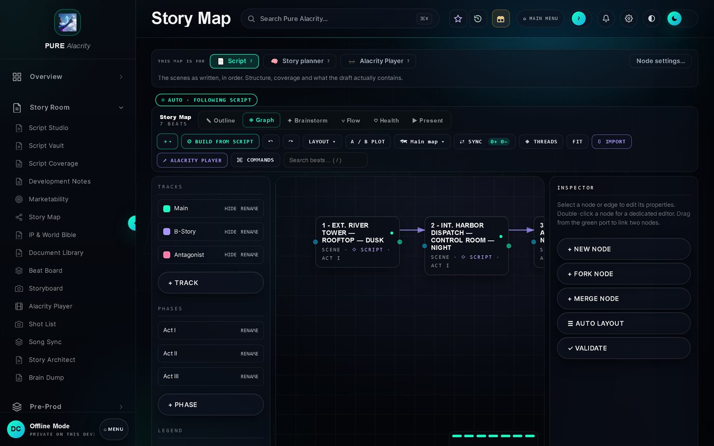

Technology
Three products. One contract between them.
Pure Alacrity is live and free to use. Alacrity Player shipped inside a released VR title. Alacrity Bridge is in development. They share a single JSON contract, which is what makes them a stack rather than three separate tools.

01 · Available
Pure Alacrity
The production suite. Script, breakdown, schedule, budget, the day on set, post and delivery — with the same numbers in all of them, because they read the same production rather than copies of it.
The problem it solves. An independent production runs on six subscriptions and a folder of spreadsheets that disagree with each other. The script says one thing, the schedule another, the budget a third, and nobody finds out until a shoot day is wrong.
Who it is for. Independent producers, student and first-time crews, small commercial units, and anyone running a production without a studio’s back office. It is free, it needs no account, and it works with no internet.
Where it came from. It was built out of Sidequest, not for it. Fourteen shoot days, eighty-four people and an internship at an established Wilmington production house made the broken workflow obvious. Development began in January 2026, and it has been running real productions since March 2026.
Story room
Script Studio, coverage, the story map, the world bible, and the export the Alacrity Player reads.
Pre-production to post
Breakdowns, stripboards, call sheets, day logs, media vaults and delivery.
Live production
On set, a desktop machine hosts the production over local Wi-Fi. Crew join with a code on their own phones — no install, no internet.
The business of it
Customers, estimates, invoices and expenses, for client work and your own slate alike.
02 · Shipped
Alacrity Player
A Unity runtime that reads one exported bundle and plays a branching story — on a headset, or as a flat 2D path for people who do not own one.
The problem it solves. Authoring a branching story and running one are normally two different worlds joined by hand. When Netflix made Bandersnatch, the tooling ended at a flowchart exported to a spreadsheet that engineers implemented by hand across hundreds of footage segments.
What it does instead. The graph written in Pure Alacrity is exported as one JSON bundle. The Player reads that file directly. The schema version is pinned on both sides and a self-test walks a bundle out and back to prove the two halves still agree.
Where it ran. It is the runtime inside Right Here Right Now!, free on Meta Horizon and SideQuest, and it is what Prize Pool is being built against.
The contract
| Schema | 2.0.0, pinned in the suite and the runtime |
| Carries | the node graph, the choices, the clip for each node |
| Verified by | a round-trip self-test on both sides |
| Targets | headset · flat 2D path · web |
Change either side of that contract without the other and the self-test fails before anything ships. That is the whole point of writing it down.
03 · In development
Alacrity Bridge
The seam into professional post. The shot plan and the day’s record arriving in an editor as a real timeline, instead of being retyped by an assistant.
Open format, not a lock-in
It speaks OpenTimelineIO, which Premiere Pro reads natively and DaVinci Resolve supports. We are not asking anyone to adopt a proprietary handoff.
The day carries through
Circled takes, camera rolls, sound files and scene numbers travel from the set record into the assembly, with the reasons attached.
Status
In development. The export and the data contract exist and are tested; the editor-side panel is the part still being built. What that means.
How they connect
One production, four places it lands.
The connections are the product. Each arrow below is a place where, without them, someone would be retyping something that already exists.
Pure Alacrity
The script, the graph, the breakdown, the schedule and the budget, all reading one production.
The bundle
One JSON file. Everything the runtime needs, and nothing it has to be told separately.
Alacrity Player
Unity reads the bundle and runs the story on a headset, on a flat screen, or on the web.
Into postAlacrity Bridge carries the shot plan and the day’s record into Premiere Pro and DaVinci Resolve through OpenTimelineIO.
Onto the setA desktop machine hosts the production on set Wi-Fi; crew open it on their phones with a code. No install, no signal needed.
Open it and put something real in it.
Pure Alacrity is free and needs no account. If you want to talk about the runtime, the bundle format or a pipeline of your own, write to us.